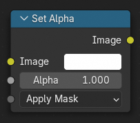
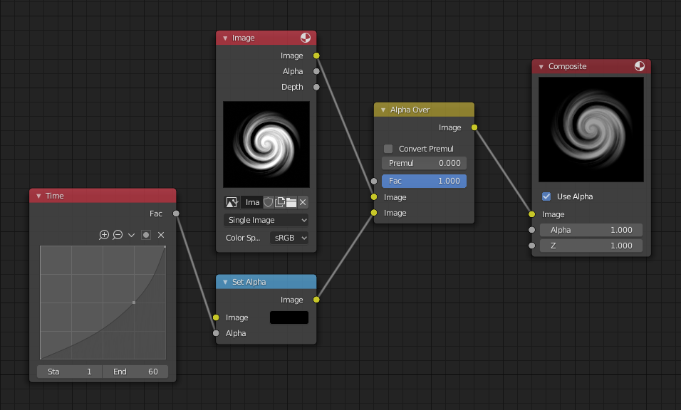
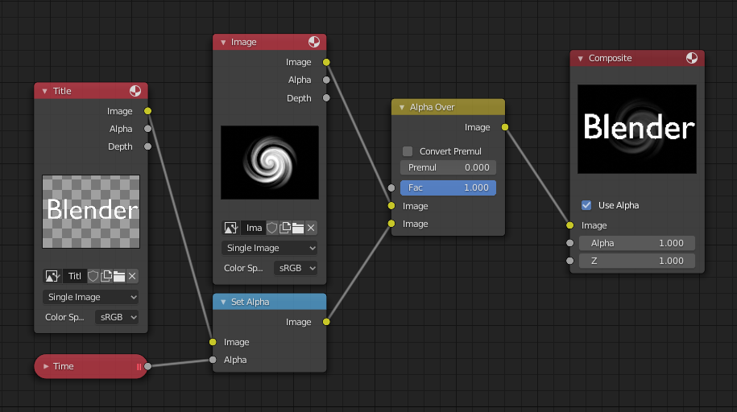
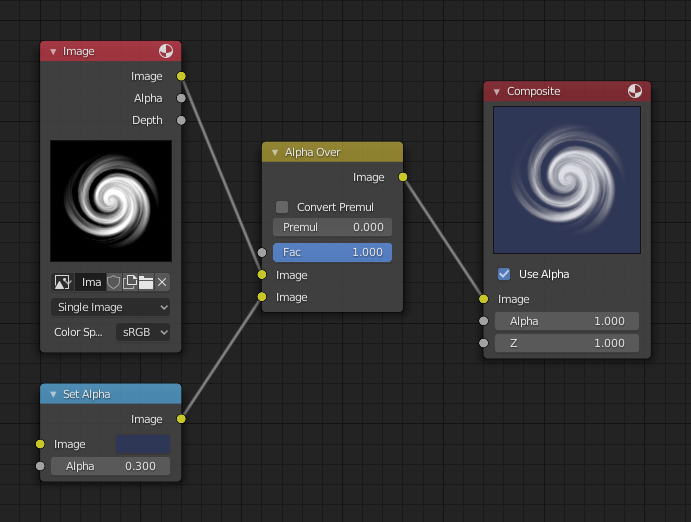

Set Alpha Node¶

Set Alpha Node thêm kênh alpha vào một ảnh.
Inputs¶
- Image
Đầu vào màu chuẩn.
- Alpha
Lượng Alpha có thể được thiết lập cho toàn bộ ảnh thông qua trường nhập liệu, hoặc cho từng pixel bằng cách kết nối vào socket.
- Type
Phương thức trộn alpha với Image đầu vào.
- Apply Mask:
Nhân các kênh RGBA của ảnh đầu vào với giá trị Alpha. Trong trường hợp này, đầu ra dùng Premultiplied Alpha.
- Replace Alpha:
Thay thế kênh alpha của đầu vào bằng giá trị Alpha. Trong trường hợp này, đầu ra dùng Straight Alpha.
Outputs¶
- Image
Đầu ra màu chuẩn.
Ghi chú
Đây không phải, và cũng không được thiết kế để là, một giải pháp tổng quát cho bài toán compositing một ảnh không chứa thông tin alpha. Nếu có thể, bạn nên dùng "chroma keying" hoặc "difference keying" (được bàn ở nơi khác). Node này thường được dùng nhất (với một đầu vào phù hợp được cung cấp qua socket) trong những trường hợp rắc rối khi vì lý do nào đó mà bạn không thể dùng trực tiếp các kỹ thuật đó.
Ví dụ¶
Fade To Black¶
Để chuyển khán giả từ cảnh này hoặc cảnh quay này sang cảnh khác, một kỹ thuật phổ biến là "fade to black" (mờ dần về đen). Như tên gọi của nó, cảnh dần mờ đi thành màn hình đen. Bạn cũng có thể "fade to white" (mờ dần về trắng) hoặc bất kỳ màu nào mong muốn, nhưng đen là màu trung tính tốt, dễ chịu cho mắt và giúp "đặt lại" tâm trí người xem. Cây node bên dưới cho thấy cách thực hiện việc này bằng Set Alpha node.

Mờ dần về đen.¶
Trong ví dụ trên, kênh alpha của ảnh xoáy bị bỏ qua. Thay vào đó, một Time Curve node đưa vào Set Alpha node một hệ số chạy từ 0.0 đến 1.0 trong 60 frame, tức khoảng 2 giây. Lưu ý rằng đường cong thời gian có hình dạng theo cấp số nhân, do đó độ đen tổng thể sẽ xuất hiện chậm rồi tăng tốc về phía cuối. Set Alpha node không cần ảnh đầu vào; thay vào đó, màu đen phẳng (không có shading) được sử dụng. Set Alpha Node dùng hệ số và màu đầu vào để tạo một ảnh đen có alpha đi từ 0.0 đến 1.0 trong 60 frame, tức từ hoàn toàn trong suốt đến hoàn toàn đục. Hãy hình dung alpha như một hệ số nhân thể thị mức độ rõ nét mà bạn thấy pixel đó. Hai ảnh này được Alpha Over node kết hợp hoàn toàn (với Factor bằng 1.0) để tạo ra ảnh composite. Như vậy, tùy vào frame đang được render, Set Alpha node sẽ tạo một ảnh đen với mức trong suốt nhất định. Thiết lập và tạo animation, bạn sẽ có một chuỗi ảnh mờ dần về đen trong khoảng hai giây.
Ghi chú
Không sử dụng thông tin Scene
Cây node ví dụ này không dùng Render Layer node. Để tạo animation 2 giây này, không có thông tin scene của Blender nào được sử dụng. Đây là ví dụ về việc dùng khả năng compositing mạnh mẽ của Blender tách biệt với các tính năng modeling và animation của nó. (Có thể thay Render Layer cho lớp Image, và hiệu ứng "fade-network" vẫn cho kết quả tương tự.)
Fade In tiêu đề¶
Để mở đầu cho animation, bạn sẽ muốn trình bày tiêu đề của animation trên một nền nào đó. Bạn có thể cho tiêu đề bay vào, hoặc mờ dần hiện ra. Để hiện ra dần dần, hãy dùng Set Alpha node kết hợp với Time Curve node như hình bên dưới.

Dùng Set Alpha để hiện dần một tiêu đề.¶
Trong ví dụ trên, một Time curve cung cấp giá trị Alpha cho socket đầu vào. Render Layer node hiện tại, vốn có tiêu đề trong tầm nhìn, cung cấp ảnh. Như trước, Alpha Over node trộn (dùng các giá trị alpha) nền xoáy và tiêu đề có alpha để tạo ảnh composite.
Tô màu cho ảnh BW¶

Dùng Set Alpha để tô màu cho một ảnh.¶
Trong ví dụ trên, hãy chú ý thấy sắc xanh của đầu vào render làm màu cho hình xoáy. Bạn có thể dùng trường màu của Set Alpha node với loại cây node này để thêm một màu đồng nhất vào ảnh BW.
Trong cây node ví dụ bên phải, hãy dùng giá trị Alpha của Set Alpha node để tạo mức độ tô màu mong muốn. Nối ảnh đầu vào và Set Alpha node vào một Alpha Over node để tô màu cho bất kỳ ảnh đen trắng nào theo cách này.